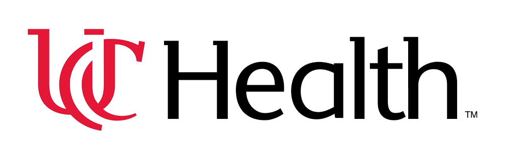
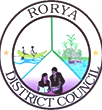
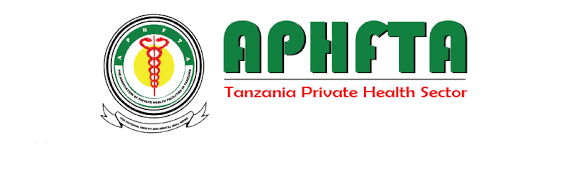
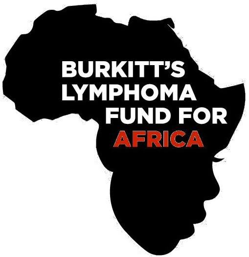
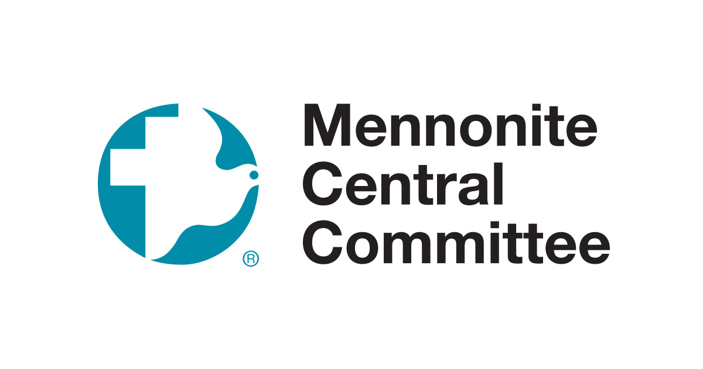
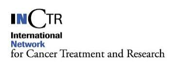
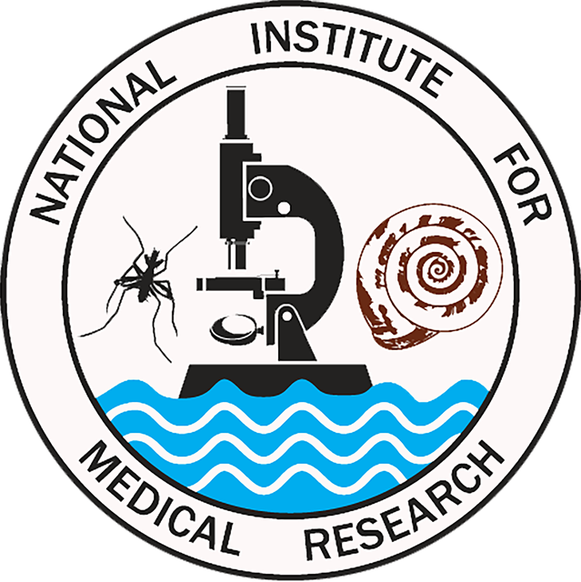
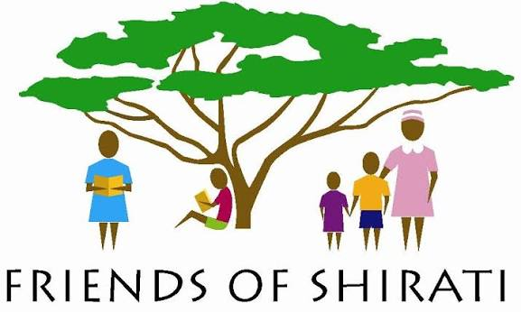
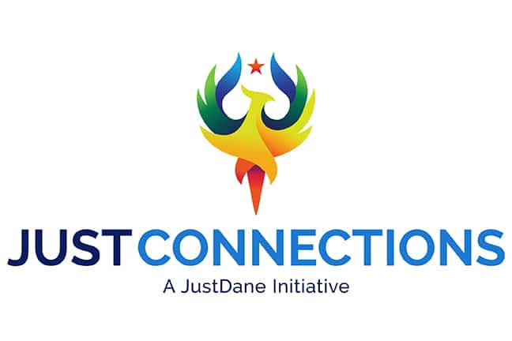

Our Partners
A long record of working with remarkable organizations to implement projects in northern Tanzania.
SHED Foundation is a trusted local implementation partner for universities, health systems, research institutions, engineering organizations, nonprofits, public agencies and donors working in northern Tanzania. SHED provides the year-round leadership, community relationships and operating capacity needed to turn outside resources and expertise into results — coordinating government and village partners, managing staff and logistics, supporting procurement and financial administration, hosting visiting teams, implementing activities and remaining engaged after a grant, study or field visit ends. Across health, education, research, water and community development, SHED’s partnerships demonstrate its ability to execute complex objectives responsibly and sustain them locally.










Goshen College
 Vituity
Vituity



 Motel 2000
Motel 2000

Roche Community Nyambogo Community Burere Community Sota Community

Local Village Committees Partner Communities Friends of Dr. Esther KawiraSHED welcomes universities, health systems, research teams, foundations, development organizations, engineering groups and other partners whose goals align with the needs of communities in northern Tanzania. We offer more than access to a project site: SHED provides local leadership, community trust, government relationships, institutional continuity and the practical capacity to move work from planning to implementation. Whether the objective is research, health care, education, water infrastructure, professional training or community development, SHED helps partners execute effectively, remain accountable and build programs that can last.